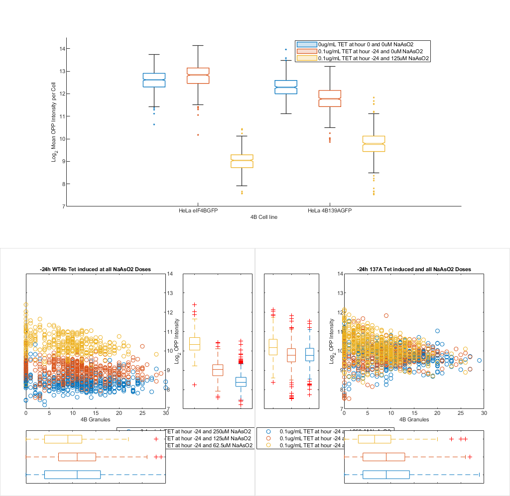

Contents
Load the appended and aligned Live_cell last frame and IF data
% 2023-06-29 Data basePath = '\\albecklab.mcb.ucdavis.edu\data\imageData\SG_4B\'; dataset2=load([basePath,'2023-06-29 4B WT vs Mut TET curve NaAsO2 curve\2023-06-29 4B WT vs Mut TET curve NaAsO2 curve_Processed.mat']); dataset2 = dataset2.dataloc; % pull the loaded dataloc structure dataloc = dataset2; % % % Pull and combine the IF datasets % pooledData = [dataset1.ifd,dataset2.ifd];
Figure 3 - RRM of 4B affects Translation and Translational haulting in stress conditions
% Figure 3A - Log2 OPP versus 4B cell line % No TET, 24h TET and 24h TET with 125uM NaAsO2 % 4B wt or mut grans vs OPP grouped by TET induction (only 24hr and 0 hr induced) minGrans = 0; % min number of granules tetTime = ("hour -24"|"hour 0"); % amount of tet induction naAsO2 = (" 125uM"|" 0uM"); % NaAsO2 treatment % make a new figure figure3 = figure; %topP = uipanel('position',[0, 0.5, 1, 1]); botLP = uipanel('position',[0, 0, 0.5, 0.5]); botRp = uipanel('position',[0.5, 0, 0.5, 0.5]); % make a new container for axes f3axes = []; subz = all([contains(dataloc.ifd.treatment,tetTime),~contains(dataloc.ifd.cell,'bad'),contains(dataloc.ifd.treatment,naAsO2),... (dataloc.ifd.Children_Grans_G3BP1_Count >= minGrans)],2); catOrder = ["0ug/mL TET at hour 0 and 0uM NaAsO2","0.1ug/mL TET at hour -24 and 0uM NaAsO2",... "0.1ug/mL TET at hour -24 and 125uM NaAsO2"]; % give the order I want for the plot f2axes(1) = subplot(2,2,[1,2]); boxchart(categorical(dataloc.ifd.cell(subz),unique(dataloc.ifd.cell(subz),"stable")),log2((dataloc.ifd.Intensity_MeanIntensity_Masked_OPP(subz)*65535)),'GroupByColor',categorical(dataloc.ifd.treatment(subz),catOrder),'Notch','on','MarkerStyle','.',"BoxWidth",1) ylim([7,14.5]) legend('Location','best'); ylabel("Log_2 Mean OPP Intensity per Cell"); xlabel('4B Cell line') fontname('Arial'); fontsize(11,"points"); % Make the % 24 hour tet wt 4b grans or 139a vs opp vs naaso2 dose/vehicle with box and wiskers? minGrans = 0; tetTime = '-24'; xlimz = [0,30]; % granule axis limits ylimz = [0, 10000]; % Opp axis limits subz = all([contains(dataloc.ifd.treatment,['TET at hour ', tetTime]),contains(dataloc.ifd.cell,'4BGFP'),... (dataloc.ifd.Children_Grans_4B_Count >= minGrans),~contains(dataloc.ifd.treatment,'and 0uM')],2); h = scatterhist(dataloc.ifd.Children_Grans_4B_Count(subz),dataloc.ifd.Intensity_MeanIntensity_Masked_OPP(subz)*65535,... 'Group',dataloc.ifd.treatment(subz),'Location','SouthEast','parent',botLP); xlabel('4B Granules'); ylabel('Mean OPP Intensity') title([tetTime,'h WT4b Tet induced and all NaAsO2 Doses']) hold on; clr = get(h(1),'colororder'); boxplot(h(2),dataloc.ifd.Children_Grans_4B_Count(subz),dataloc.ifd.treatment(subz),'orientation','horizontal',... 'label',{'','',''},'color',clr); boxplot(h(3),(dataloc.ifd.Intensity_MeanIntensity_Masked_OPP(subz)*65535),dataloc.ifd.treatment(subz),'orientation','horizontal',... 'label', {'','',''},'color',clr); set(h(2:3),'XTickLabel',''); view(h(3),[270,90]); % Rotate the Y plot xlim(h(1),xlimz); ylim(h(1),ylimz); xlim(h(2),xlimz); xlim(h(3),ylimz); % Sync axes hold off; subz = all([contains(dataloc.ifd.treatment,['TET at hour ', tetTime]),contains(dataloc.ifd.cell,'139A'),... (dataloc.ifd.Children_Grans_4B_Count >= minGrans),~contains(dataloc.ifd.treatment,'and 0uM')],2); h=scatterhist(dataloc.ifd.Children_Grans_4B_Count(subz),dataloc.ifd.Intensity_MeanIntensity_Masked_OPP(subz)*65535,... 'Group',dataloc.ifd.treatment(subz),'parent',botRp); xlabel('4B Granules'); ylabel('Mean OPP Intensity') title([tetTime,'h 137A Tet induced and all NaAsO2 Doses']) hold on; clr = get(h(1),'colororder'); boxplot(h(2),dataloc.ifd.Children_Grans_4B_Count(subz),dataloc.ifd.treatment(subz),'orientation','horizontal',... 'label',{'','',''},'color',clr); boxplot(h(3),dataloc.ifd.Intensity_MeanIntensity_Masked_OPP(subz)*65535,dataloc.ifd.treatment(subz),'orientation','horizontal',... 'label', {'','',''},'color',clr); set(h(2:3),'XTickLabel',''); view(h(3),[270,90]); % Rotate the Y plot xlim(h(1),xlimz); ylim(h(1),ylimz); xlim(h(2),xlimz); xlim(h(3),ylimz); % Sync axes hold off; saveas(figure3,'\\albecklab.mcb.ucdavis.edu\data\imageData\SG_4B\Paper Figures\figure3.fig') saveas(figure3,'\\albecklab.mcb.ucdavis.edu\data\imageData\SG_4B\Paper Figures\figure3.svg') % %% 24 hour tet wt 4b grans or 139a vs opp vs naaso2 dose/vehicle % minGrans = 0; % % figure % hp1 = uipanel('position',[0, 0, 0.5, 1]); % hp2 = uipanel('position',[0.5, 0, 0.5, 1]); % % subz = all([contains(dataloc.ifd.treatment,'TET at hour -24'),contains(dataloc.ifd.cell,'4BGFP'),... % (dataloc.ifd.Children_Grans_4B_Count >= minGrans),],2); % scatterhist(dataloc.ifd.Children_Grans_4B_Count(subz),dataloc.ifd.Intensity_MeanIntensity_Masked_OPP(subz)*65535,... % 'Group',dataloc.ifd.treatment(subz),'Kernel','on','Direction','Out','Parent',hp1,'Location','SouthEast' ) % xlim([0,15]); ylim([0,10000]); xlabel('4B Granules'); ylabel('Mean OPP Intensity') % title('24h WT4b Tet induced and all NaAsO2 Doses') % % % subz = all([contains(dataloc.ifd.treatment,'TET at hour -24'),contains(dataloc.ifd.cell,'139A'),... % (dataloc.ifd.Children_Grans_4B_Count >= minGrans)],2); % scatterhist(dataloc.ifd.Children_Grans_4B_Count(subz),dataloc.ifd.Intensity_MeanIntensity_Masked_OPP(subz)*65535,... % 'Group',dataloc.ifd.treatment(subz),'Kernel','on','Direction','Out','Parent',hp2) % xlim([0,15]); ylim([0,10000]); xlabel('4B Granules'); ylabel('Mean OPP Intensity') % title('24h 137A Tet induced and all NaAsO2 Doses') % % %% X hour tet wt 4b grans or 139a vs opp vs naaso2 dose/vehicle with box and wiskers? % minGrans = 0; % tetTime = '-24'; % xlimz = [0,30]; % granule axis limits % ylimz = [0, 10000]; % Opp axis limits % % figure % hp1 = uipanel('position',[0, 0, 0.5, 1]); % hp2 = uipanel('position',[0.5, 0, 0.5, 1]); % % subz = all([contains(dataloc.ifd.treatment,['TET at hour ', tetTime]),contains(dataloc.ifd.cell,'4BGFP'),... % (dataloc.ifd.Children_Grans_4B_Count >= minGrans),],2); % h = scatterhist(dataloc.ifd.Children_Grans_4B_Count(subz),dataloc.ifd.Intensity_MeanIntensity_Masked_OPP(subz)*65535,... % 'Group',dataloc.ifd.treatment(subz),'Parent',hp1,'Location','SouthEast'); % xlabel('4B Granules'); ylabel('Mean OPP Intensity') % title([tetTime,'h WT4b Tet induced and all NaAsO2 Doses']) % hold on; % clr = get(h(1),'colororder'); % boxplot(h(2),dataloc.ifd.Children_Grans_4B_Count(subz),dataloc.ifd.treatment(subz),'orientation','horizontal',... % 'label',{'','','',''},'color',clr); % boxplot(h(3),(dataloc.ifd.Intensity_MeanIntensity_Masked_OPP(subz)*65535),dataloc.ifd.treatment(subz),'orientation','horizontal',... % 'label', {'','','',''},'color',clr); % set(h(2:3),'XTickLabel',''); % view(h(3),[270,90]); % Rotate the Y plot % xlim(h(1),xlimz); ylim(h(1),ylimz); % xlim(h(2),xlimz); xlim(h(3),ylimz); % Sync axes % hold off; % % % subz = all([contains(dataloc.ifd.treatment,['TET at hour ', tetTime]),contains(dataloc.ifd.cell,'139A'),... % (dataloc.ifd.Children_Grans_4B_Count >= minGrans)],2); % h=scatterhist(dataloc.ifd.Children_Grans_4B_Count(subz),dataloc.ifd.Intensity_MeanIntensity_Masked_OPP(subz)*65535,... % 'Group',dataloc.ifd.treatment(subz),'Parent',hp2); % xlabel('4B Granules'); ylabel('Mean OPP Intensity') % title([tetTime,'h 137A Tet induced and all NaAsO2 Doses']) % hold on; % clr = get(h(1),'colororder'); % boxplot(h(2),dataloc.ifd.Children_Grans_4B_Count(subz),dataloc.ifd.treatment(subz),'orientation','horizontal',... % 'label',{'','','',''},'color',clr); % boxplot(h(3),dataloc.ifd.Intensity_MeanIntensity_Masked_OPP(subz)*65535,dataloc.ifd.treatment(subz),'orientation','horizontal',... % 'label', {'','','',''},'color',clr); % set(h(2:3),'XTickLabel',''); % view(h(3),[270,90]); % Rotate the Y plot % xlim(h(1),xlimz); ylim(h(1),ylimz); % xlim(h(2),xlimz); xlim(h(3),ylimz); % Sync axes % hold off; % % %% X hour tet wt 4b grans or 139a vs opp vs naaso2 dose/vehicle with box and wiskers > 0 uM % minGrans = 2; % tetTime = '-24'; % xlimz = [0,30]; % granule axis limits % ylimz = [0, 2500]; % Opp axis limits % % figure % hp1 = uipanel('position',[0, 0, 0.5, 1]); % hp2 = uipanel('position',[0.5, 0, 0.5, 1]); % % subz = all([contains(dataloc.ifd.treatment,['TET at hour ', tetTime]),contains(dataloc.ifd.cell,'4BGFP'),... % ~contains(dataloc.ifd.treatment,' 0uM'),(dataloc.ifd.Children_Grans_4B_Count >= minGrans),],2); % h = scatterhist(dataloc.ifd.Children_Grans_4B_Count(subz),dataloc.ifd.Intensity_MeanIntensity_Masked_OPP(subz)*65535,... % 'Group',dataloc.ifd.treatment(subz),'Parent',hp1,'Location','SouthEast'); % xlabel('4B Granules'); ylabel('Mean OPP Intensity') % title([tetTime,'h WT4b Tet induced and all NaAsO2 Doses']) % hold on; % clr = get(h(1),'colororder'); % boxplot(h(2),dataloc.ifd.Children_Grans_4B_Count(subz),dataloc.ifd.treatment(subz),'orientation','horizontal',... % 'label',{'','',''},'color',clr,'Notch','on'); % boxplot(h(3),(dataloc.ifd.Intensity_MeanIntensity_Masked_OPP(subz)*65535),dataloc.ifd.treatment(subz),'orientation','horizontal',... % 'label', {'','',''},'color',clr,'Notch','on'); % set(h(2:3),'XTickLabel',''); % view(h(3),[270,90]); % Rotate the Y plot % xlim(h(1),xlimz); ylim(h(1),ylimz); % xlim(h(2),xlimz); xlim(h(3),ylimz); % Sync axes % hold off; % % % subz = all([contains(dataloc.ifd.treatment,['TET at hour ', tetTime]),contains(dataloc.ifd.cell,'139A'),... % ~contains(dataloc.ifd.treatment,' 0uM'),(dataloc.ifd.Children_Grans_4B_Count >= minGrans)],2); % h=scatterhist(dataloc.ifd.Children_Grans_4B_Count(subz),dataloc.ifd.Intensity_MeanIntensity_Masked_OPP(subz)*65535,... % 'Group',dataloc.ifd.treatment(subz),'Parent',hp2); % xlabel('4B Granules'); ylabel('Mean OPP Intensity') % title([tetTime,'h 137A Tet induced and all NaAsO2 Doses']) % hold on; % clr = get(h(1),'colororder'); % boxplot(h(2),dataloc.ifd.Children_Grans_4B_Count(subz),dataloc.ifd.treatment(subz),'orientation','horizontal',... % 'label',{'','',''},'color',clr,'Notch','on'); % boxplot(h(3),dataloc.ifd.Intensity_MeanIntensity_Masked_OPP(subz)*65535,dataloc.ifd.treatment(subz),'orientation','horizontal',... % 'label', {'','',''},'color',clr,'Notch','on'); % set(h(2:3),'XTickLabel',''); % view(h(3),[270,90]); % Rotate the Y plot % xlim(h(1),xlimz); ylim(h(1),ylimz); % xlim(h(2),xlimz); xlim(h(3),ylimz); % Sync axes % hold off; % %% X hour tet wt 4b grans or 139a vs opp vs naaso2 dose > 0 % minGrans = 2; % tetTime = '-24'; % figure % hp1 = uipanel('position',[0, 0, 0.5, 1]); % hp2 = uipanel('position',[0.5, 0, 0.5, 1]); % % subz = all([contains(dataloc.ifd.treatment,['TET at hour ', tetTime]),contains(dataloc.ifd.cell,'4BGFP'),~contains(dataloc.ifd.treatment,' 0uM'),... % (dataloc.ifd.Children_Grans_4B_Count >= minGrans),],2); % scatterhist(dataloc.ifd.Children_Grans_4B_Count(subz),dataloc.ifd.Intensity_MeanIntensity_Masked_OPP(subz)*65535,... % 'Group',dataloc.ifd.treatment(subz),'Kernel','on','Direction','Out','Parent',hp1,'Location','SouthEast' ) % xlim([0,20]); ylim([0,4000]); xlabel('4B Granules'); ylabel('Mean OPP Intensity') % title([tetTime,'h WT4b Tet induced and all NaAsO2 Doses']) % % % subz = all([contains(dataloc.ifd.treatment,['TET at hour ', tetTime]),contains(dataloc.ifd.cell,'139A'),~contains(dataloc.ifd.treatment,' 0uM'),... % (dataloc.ifd.Children_Grans_4B_Count >= minGrans)],2); % scatterhist(dataloc.ifd.Children_Grans_4B_Count(subz),dataloc.ifd.Intensity_MeanIntensity_Masked_OPP(subz)*65535,... % 'Group',dataloc.ifd.treatment(subz),'Kernel','on','Direction','Out','Parent',hp2) % xlim([0,20]); ylim([0,4000]); xlabel('4B Granules'); ylabel('Mean OPP Intensity') % title([tetTime,'h 137A Tet induced and all NaAsO2 Doses']) % % %% X hour tet wt 4b grans or 139a vs opp vs naaso2 dose > 0 % minGrans = 0; % tetTime = '-24'; % figure % hp1 = uipanel('position',[0, 0, 0.5, 1]); % hp2 = uipanel('position',[0.5, 0, 0.5, 1]); % % subz = all([contains(dataloc.ifd.treatment,['TET at hour ', tetTime]),contains(dataloc.ifd.cell,'4BGFP'),~contains(dataloc.ifd.treatment,' 0uM'),... % (dataloc.ifd.Children_Grans_4B_Count >= minGrans),],2); % scatterhist(dataloc.ifd.Children_Grans_4B_Count(subz),dataloc.ifd.Intensity_MeanIntensity_Masked_OPP(subz)*65535,... % 'Group',dataloc.ifd.treatment(subz),'Kernel','on','Direction','Out','Parent',hp1,'Location','SouthEast' ) % xlim([0,20]); ylim([0,4000]); xlabel('4B Granules'); ylabel('Mean OPP Intensity') % title([tetTime,'h WT4b Tet induced and all NaAsO2 Doses']) % % % subz = all([contains(dataloc.ifd.treatment,['TET at hour ', tetTime]),contains(dataloc.ifd.cell,'139A'),~contains(dataloc.ifd.treatment,' 0uM'),... % (dataloc.ifd.Children_Grans_4B_Count >= minGrans)],2); % scatterhist(dataloc.ifd.Children_Grans_4B_Count(subz),dataloc.ifd.Intensity_MeanIntensity_Masked_OPP(subz)*65535,... % 'Group',dataloc.ifd.treatment(subz),'Kernel','on','Direction','Out','Parent',hp2) % xlim([0,20]); ylim([0,4000]); xlabel('4B Granules'); ylabel('Mean OPP Intensity') % title([tetTime,'h 137A Tet induced and all NaAsO2 Doses']) % % %% X hour tet wt 4b grans or 139a vs opp @ NO naaso2 dose % naDose = ' 0uM'; % figure; % subz = all([contains(dataloc.ifd.cell,'4BGFP'),contains(dataloc.ifd.treatment,naDose)],2); % subset the data to be wt 4b % catz = categorical(dataloc.ifd.treatment(subz)); % catz = reordercats(catz,unique((dataloc.ifd.treatment(subz)),"stable")); % boxplot(dataloc.ifd.Intensity_MeanIntensity_Masked_OPP(subz)*65535,catz,'Notch','on') % ylim([0, 22000]) % xlabel('TET Induction'); ylabel('Mean OPP Intensity') % title('WT4b Tet induction versus OPP') % % figure; % subz = all([contains(dataloc.ifd.cell,'139A'),contains(dataloc.ifd.treatment,naDose)],2); % subset the data to be 139A 4b % catz = categorical(dataloc.ifd.treatment(subz)); % catz = reordercats(catz,unique((dataloc.ifd.treatment(subz)),"stable")); % boxplot(dataloc.ifd.Intensity_MeanIntensity_Masked_OPP(subz)*65535,catz,'Notch','on') % xlabel('TET Induction'); ylabel('Mean OPP Intensity') % ylim([0, 22000]) % title('139A Tet induction versus OPP') % %% OPP vs G3BP1 Grans by TET induction % tetDose = '250uM'; % minGrans = 3; % ylimz = [0, 4000]; % xlimz = [0, 20]; % % figure % hp1 = uipanel('position',[0, 0, 0.5, 1]); % hp2 = uipanel('position',[0.5, 0, 0.5, 1]); % % subz = all([contains(dataloc.ifd.treatment,tetDose),contains(dataloc.ifd.cell,'4BGFP'), ... % (dataloc.ifd.Children_Grans_G3BP1_Count >= minGrans)],2); % h = scatterhist(dataloc.ifd.Children_Grans_G3BP1_Count(subz),dataloc.ifd.Intensity_MeanIntensity_Masked_OPP(subz)*65535,... % 'Group',dataloc.ifd.full(subz),'Parent',hp1,'Location','SouthEast'); %'Color','kcbgmr', % xlabel('G3BP1 Granules');ylabel('Mean OPP Intensity') % title([tetDose,' NaAsO2 Treated OPP vs Grans by WT 4B by TET induction']) % % hold on; % clr = get(h(1),'colororder'); % boxplot(h(2),dataloc.ifd.Children_Grans_G3BP1_Count(subz),dataloc.ifd.treatment(subz),'orientation','horizontal',... % 'label',{'','','','','',''},'color',clr); % % boxplot(h(3),(dataloc.ifd.Intensity_MeanIntensity_Masked_OPP(subz)*65535),dataloc.ifd.treatment(subz),'orientation','horizontal',... % 'label', {'','','','','',''},'color',clr); % set(h(2:3),'XTickLabel',''); % view(h(3),[270,90]); % Rotate the Y plot % hold off; % xlim(h(1),xlimz); ylim(h(1),ylimz); % xlim(h(2),xlimz); xlim(h(3),ylimz); % % subz = all([contains(dataloc.ifd.treatment,tetDose),contains(dataloc.ifd.cell,'139A'),... % (dataloc.ifd.Children_Grans_G3BP1_Count >= minGrans)],2); % h = scatterhist(dataloc.ifd.Children_Grans_G3BP1_Count(subz),dataloc.ifd.Intensity_MeanIntensity_Masked_OPP(subz)*65535,... % 'Group',dataloc.ifd.full(subz),'Parent',hp2); %'Color','kcbgmr', % xlabel('G3BP1 Granules');ylabel('Mean OPP Intensity') % title([tetDose,' NaAsO2 Treated OPP vs Grans by 139A Mut 4B by TET induction']) % hold on; % clr = get(h(1),'colororder'); % boxplot(h(2),dataloc.ifd.Children_Grans_G3BP1_Count(subz),dataloc.ifd.treatment(subz),'orientation','horizontal',... % 'label',{'','','','','',''},'color',clr); % boxplot(h(3),dataloc.ifd.Intensity_MeanIntensity_Masked_OPP(subz)*65535,dataloc.ifd.treatment(subz),'orientation','horizontal',... % 'label', {'','','','','',''},'color',clr); % set(h(2:3),'XTickLabel',''); % view(h(3),[270,90]); % Rotate the Y plot % xlim(h(1),xlimz); ylim(h(1),ylimz); % xlim(h(2),xlimz); xlim(h(3),ylimz); % hold off; % % %% 4B wt or mut grans vs OPP grouped by TET induction without 0 % figure; % subz = all([contains(dataloc.ifd.cell,'4BGFP'),~contains(dataloc.ifd.treatment,' 0uM')],2); % subset the data to be wt 4b % catz = categorical(dataloc.ifd.treatment(subz)); % catz = reordercats(catz,unique((dataloc.ifd.treatment(subz)),"stable")); % boxplot(dataloc.ifd.Intensity_MeanIntensity_Masked_OPP(subz)*65535,catz,"ColorGroup",catz,'PlotStyle','compact') % ylim([0, 4000]) % xlabel('TET Induction'); ylabel('Mean OPP Intensity') % title('WT4b Tet induction versus OPP') % % figure; % subz = all([contains(dataloc.ifd.cell,'139A'),~contains(dataloc.ifd.treatment,' 0uM')],2); % subset the data to be 139A 4b % catz = categorical(dataloc.ifd.treatment(subz)); % catz = reordercats(catz,unique((dataloc.ifd.treatment(subz)),"stable")); % boxplot(dataloc.ifd.Intensity_MeanIntensity_Masked_OPP(subz)*65535,catz,"ColorGroup",catz,'PlotStyle','compact') % xlabel('TET Induction'); ylabel('Mean OPP Intensity') % ylim([0, 4000]) % title('139A Tet induction versus OPP') % % % % %% 4B wt or mut cells G3BP1 grans treated with 125uM NaAsO2 (only 24hr induced) % minGrans = 2; % tetTime = ("hour -24"); % naAsO2 = (" 125uM"); % % subz = all([contains(dataloc.ifd.treatment,tetTime),~contains(dataloc.ifd.cell,'bad'),contains(dataloc.ifd.treatment,naAsO2),... % (dataloc.ifd.Children_Grans_4B_Count >= minGrans)],2); % % fourBstats = grpstats(dataloc.ifd(subz,:),"cell",["mean","median","sem","std","meanci"],"DataVars","Children_Grans_4B_Count"); % % figure; % plt = bar(fourBstats.cell,fourBstats.mean_Children_Grans_4B_Count,"LineWidth",1); % plt.CData(2,:) = [1, 0, 0]; % % ylim([7,14.5]) % ylabel("Log_2 Mean OPP Intensity per Cell") % % % % %% EXTRA % statsOut = grpstats(dataloc.ifd(subz,:),["cell","ptx","tx1"],["mean","median","sem","std"],"DataVars",["Intensity_MeanIntensity_Masked_OPP","Children_Grans_4B_Count","Children_Grans_G3BP1_Count"]); % statsOut = grpstats(dataloc.ifd(subz,:),["cell","treatment"],["mean","median","sem","std"],"DataVars",["Intensity_MeanIntensity_Masked_OPP","Children_Grans_4B_Count","Children_Grans_G3BP1_Count"]); % scatterhist(categorical(dataloc.ifd.cell(subz),unique(dataloc.ifd.cell(subz),"stable")),(dataloc.ifd.Intensity_MeanIntensity_Masked_OPP(subz)*65535),"Group",dataloc.ifd.treatment(subz)) % boxchart(categorical(dataloc.ifd.cell(subz),unique(dataloc.ifd.cell(subz),"stable")),log2((dataloc.ifd.Intensity_MeanIntensity_Masked_OPP(subz)*65535)),'GroupByColor',dataloc.ifd.treatment(subz),'Notch','on','MarkerStyle','.') % legend('Location','best'); % % % % bar(categorical(statsOut.Properties.RowNames,unique(statsOut.Properties.RowNames,"stable")),statsOut.mean_Intensity_MeanIntensity_Masked_OPP*65525) % % scatterhist(dataloc.ifd.Children_Grans_4B_Count(subz),dataloc.ifd.Intensity_MeanIntensity_Masked_OPP(subz)*65535,... % 'Group',dataloc.ifd.treatment(subz),'Kernel','on','Direction','Out','Parent',hp1,'Location','SouthEast' ) % xlim([0,20]); ylim([0,4000]); xlabel('4B Granules'); ylabel('Mean OPP Intensity') % title([tetTime,'h WT4b Tet induced and all NaAsO2 Doses']) % % % subz = all([contains(dataloc.ifd.treatment,['TET at hour ', tetTime]),contains(dataloc.ifd.cell,'139A'),~contains(dataloc.ifd.treatment,' 0uM'),... % (dataloc.ifd.Children_Grans_4B_Count >= minGrans)],2); % scatterhist(dataloc.ifd.Children_Grans_4B_Count(subz),dataloc.ifd.Intensity_MeanIntensity_Masked_OPP(subz)*65535,... % 'Group',dataloc.ifd.treatment(subz),'Kernel','on','Direction','Out','Parent',hp2) % xlim([0,20]); ylim([0,4000]); xlabel('4B Granules'); ylabel('Mean OPP Intensity') % title([tetTime,'h 137A Tet induced and all NaAsO2 Doses'])
Warning: In a future release, UI components will not be included in the output. To include UI components, use the exportapp function.